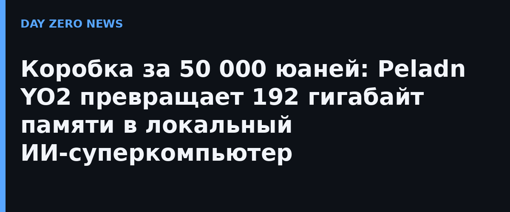

Мини-станция Peladn YO2 строится на 16 ядрах Zen 5 (32 потока, частота до 5,2 ГГц), встроенной графике Radeon 8065S архитектуры RDNA 3.5 с 40 вычислительными блоками и нейронном процессоре XDNA 2 мощностью 55 TOPS. Суммарная производительность ИИ-вычислений, по данным производителя, достигает 131 TOPS. Ключевая особенность — 192 ГБ памяти LPDDR5X-8533 в четыре канала: память единая, и до 160 ГБ из неё графика может отводить под себя как «видеопамять».
Чем больше памяти доступно графическому ядру, тем крупнее модель, целиком помещающаяся в локальную коробку без выгрузки весов на диск. Для квантованных моделей класса 70B и выше такой объём — штатный режим, а объединение до четырёх YO2 в кластер даёт, по заявлениям Peladn, суммарные 640 ГБ под веса. Это прямой ответ на запрос локального ИИ: модели без облака, без подписки и без отправки данных наружу.
Коробка не одинока на рынке: Minisforum MS-S1 MAX на том же Ryzen AI Max+ PRO 495 в США оценён в 7399 долларов, а ACEMAGIC F9A с 192 ГБ стоит заметно дешевле в младших конфигурациях. Peladn берёт не ценой (49 999 юаней — это примерно 7000 долларов), а обещанной связкой четырёх устройств в цепочку и тремя режимами питания: 55 Вт тихий, 85 Вт сбалансированный, 120 Вт максимальный, пиковый TDP — 160 Вт. Из прочего: три слота M.2 PCIe 4.0, два USB4 40 Гбит/с, два сетевых порта 2,5G, Wi-Fi 7 и Bluetooth 5.4.
Отдельной новостной страницы именно этой конфигурации на сайте Peladn нет — производитель открыл предзаказ через свои магазины на JD.com и Tmall (объявление от 30 сентября), а 11 октября продажи начались. Страница серии YO2 на официальном сайте компании — по ссылке «Первоисточник».